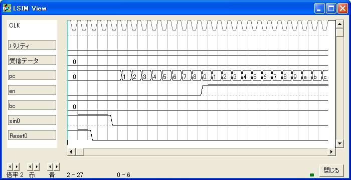
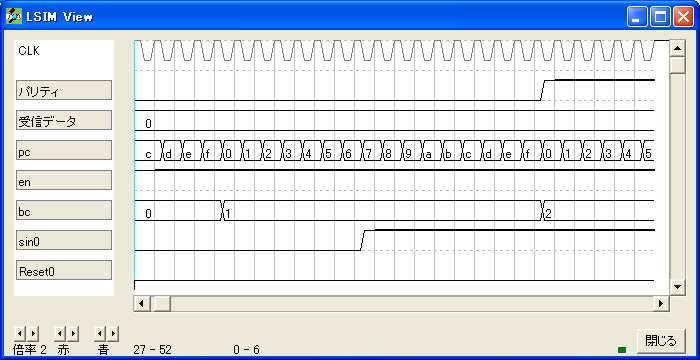
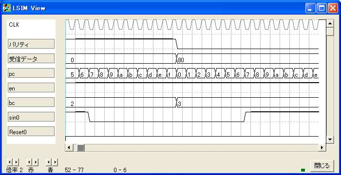
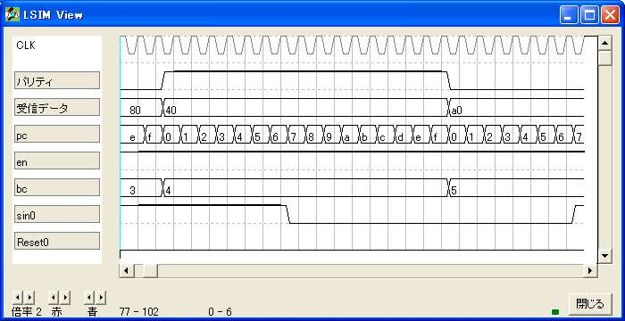
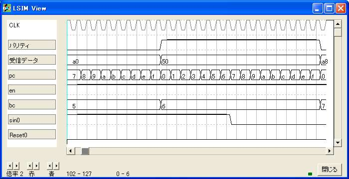
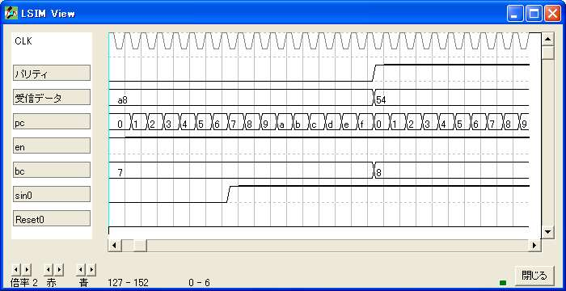
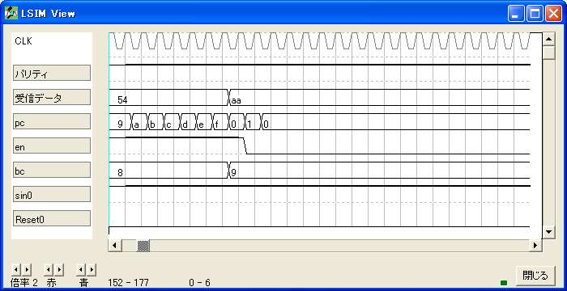

{ =============================================== }
{ 非同期直列受信 }
{ =============================================== }
logicname sample
{ =============================================== }
{ 実効譜 }
{ =============================================== }
entity main
input Reset; {初期化}
input sin; {受信入力}
output tp0[4];
output tp1;
output tp2[4];
output data[10]; {受信データ}
bitr pc[4]; {ビット幅計数}
bitr en; {受信有効}
bitr bc[4]; {ビット計数}
bitr regdata[10]; {仮受信データ}
{ ----------------------------------------------- }
{ ビット幅計数 }
{ ----------------------------------------------- }
if (!Reset)
if (!sin)
if ((pc==8)&(!en))
pc=0;
else
pc=pc+1;
endif
else
if (en)
pc=pc+1;
else
pc=0;
endif
endif
endif
{ ----------------------------------------------- }
{ 受信有効 }
{ ----------------------------------------------- }
if (!Reset)
if (bc!=9)
if (pc==8)
if (en)
en=en;
else
en=1;
endif
else
en=en;
endif
endif
endif
{ ----------------------------------------------- }
{ ビット計数 }
{ ----------------------------------------------- }
if (!Reset)
if (bc!=10)
if (pc==15)
bc=bc+1;
else
bc=bc;
endif
endif
endif
{ ----------------------------------------------- }
{ 受信データ }
{ ----------------------------------------------- }
if (!Reset)
if (pc==15)
regdata.0=sin;
regdata.1=regdata.0;
regdata.2=regdata.1;
regdata.3=regdata.2;
regdata.4=regdata.3;
regdata.5=regdata.4;
regdata.6=regdata.5;
regdata.7=regdata.6;
regdata.8=regdata.7;
regdata.9=regdata.8;
else
regdata=regdata;
endif
endif
data.8=regdata.0;
data.0:7=regdata.8:1;
{ ----------------------------------------------- }
{ テスト端子 }
{ ----------------------------------------------- }
tp0=bc;
tp1=en;
tp2=pc;
ende
{ =============================================== }
{ 機能実行譜 }
{ =============================================== }
entity sim
output Reset;
output sin;
output tp0[4];
output tp1;
output tp2[4];
output data[10];
bitr tc[8];
part main(Reset,sin,tp0,tp1,tp2,data)
tc=tc+1;
if (tc<6) sin=1; endif
if (tc<4) Reset=1; endif
if ((tc>=6) &(tc<=21)) sin=0; endif { start bit }
if ((tc>=22) &(tc<=37)) sin=0; endif { data bit 0 }
if ((tc>=38) &(tc<=53)) sin=1; endif { 1 }
if ((tc>=54) &(tc<=69)) sin=0; endif { 2 }
if ((tc>=70) &(tc<=85)) sin=1; endif { 3 }
if ((tc>=86) &(tc<=101)) sin=0; endif { 4 }
if ((tc>=102)&(tc<=117)) sin=1; endif { 5 }
if ((tc>=118)&(tc<=133)) sin=0; endif { 6 }
if ((tc>=134)&(tc<=149)) sin=1; endif { 7 }
if ((tc>=150)&(tc<=165)) sin=1; endif { parity bit }
if (tc>=166) sin=1; endif { stop bit }
ende
endlogic






